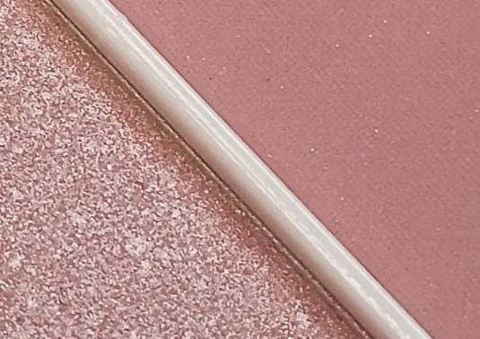
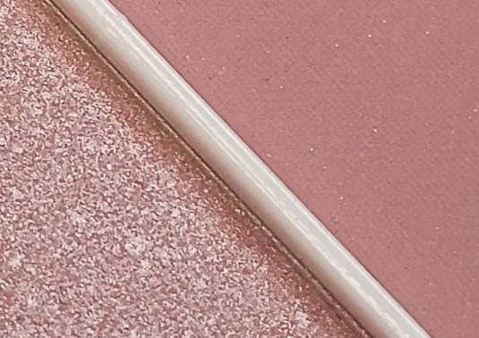

~COLORETE POLVO~
Los encontramos con distinto acabado: mates y luminosos. Siempre y cuando preparemos bien la piel antes de maquillarnos no tienen porqué resecar.
Las pieles grasas suelen decantarse más por este tipo de coloretes.
Los encontramos con distinto acabado: mates y luminosos. Siempre y cuando preparemos bien la piel antes de maquillarnos no tienen porqué resecar.
Las pieles grasas suelen decantarse más por este tipo de coloretes.
